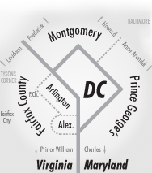

Press
Coverage of Code for DC and our projects.
Is there a link between walkability and local school performance?
The Atlantic Cities, March 15, 2013
Read more

How school tiers match up with Walk Score
Greater Greater Washington, March 13, 2013
Read more
Community of civic hackers for education takes shape
Greater Greater Washington, March 12, 2013
Read more
Open data can help families with confusing school choices
Greater Greater Washington, March 04, 2013
Read more
International Open Data Day in Washington DC
The World Bank, March 07, 2013
Watch here
Open Data community hacks D.C. and global issues
The World Bank, March 07, 2013
Read more
Hack D.C.: Hackers Put Open Data to Use to Help Improve Local Government
DCist, March 05, 2013
Read more
National Day of Civic Hacking: Volunteer experts, federal agencies team up to find technology solutions
WJLA ABC 7, June 02, 2013
Watch here